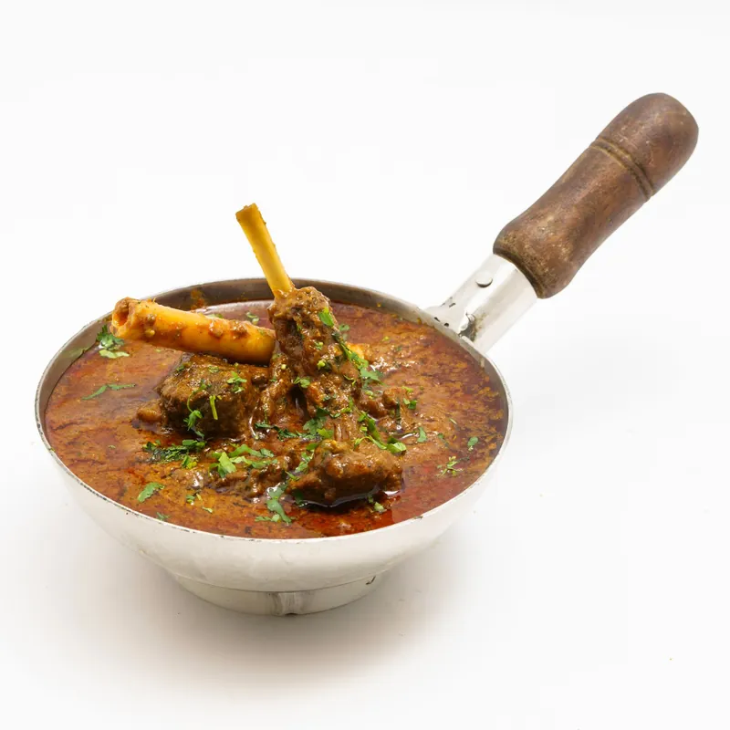
Mutton Karahi
The dish reviewers name first — mutton simmered in its own karahi, finished with green chillies and ginger. Order it by the half or full kilo.
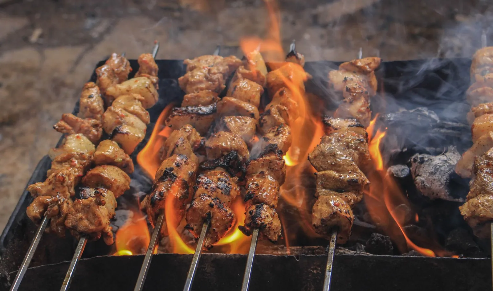
01 Boat Basin · Clifton · Karachi
Mutton karahi, cheese makhni and smoky barbecue, cooked live in front of you at Boat Basin — the way Karachi regulars have ordered it for years.
02 The karahi board
Everything here starts in the karahi. These are the dishes reviewers name first — mutton karahi above all, then the makhni handis regulars drive across Clifton for.

The dish reviewers name first — mutton simmered in its own karahi, finished with green chillies and ginger. Order it by the half or full kilo.
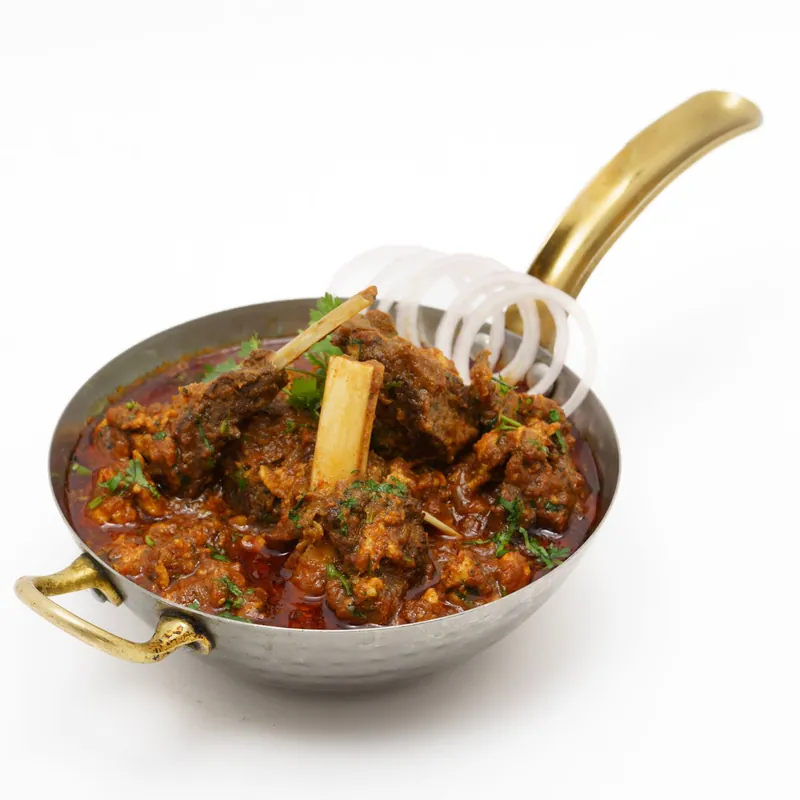
Slow-cooked mutton handi, rich and aromatic. Reviewers call the mutton handi one of Frontier's two specialities, alongside the karahi.
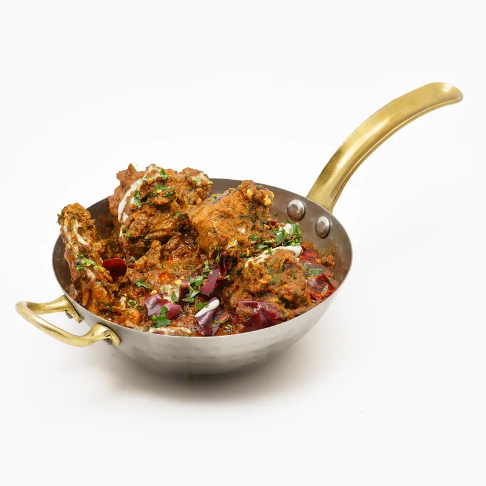
Creamy makhni karahi. One regular's scorecard reads: mutton karahi 10/10, chicken makhni karahi 10/10.
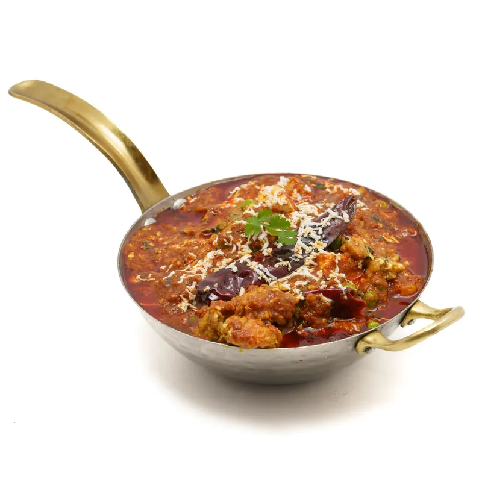
The cheese makhni regulars call Frontier's signature — rich, creamy, made for tearing naan through.
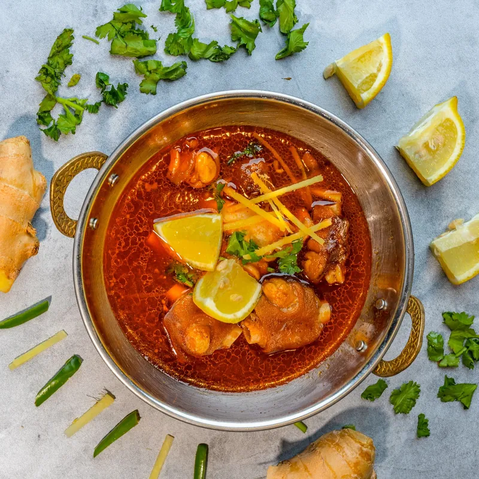
Boneless reshmi handi — mild, creamy and made for the family table.
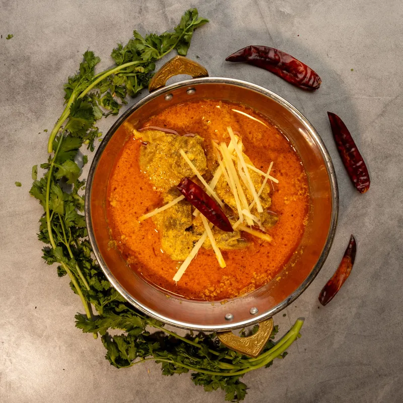
Slow-simmered daal makhni — the quiet favourite reviewers name right alongside the karahi.
Also from the karahi: dry mutton karahi · mutton qeema · handi biryani · dry chicken karahi — ask at the counter. Prices on request.
03 The grill
Skewers, tikka and chops, grilled over live charcoal while you wait. Slide through the grill — the platter is the move for a first visit.
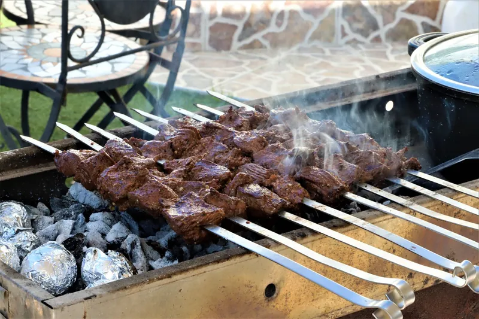
Hand-pressed seekh, smoky off the coals.
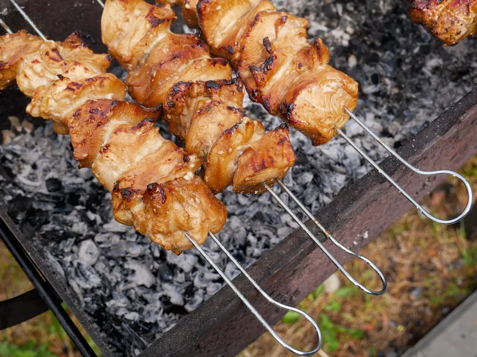
Creamy malai tikka, charred at the edges.
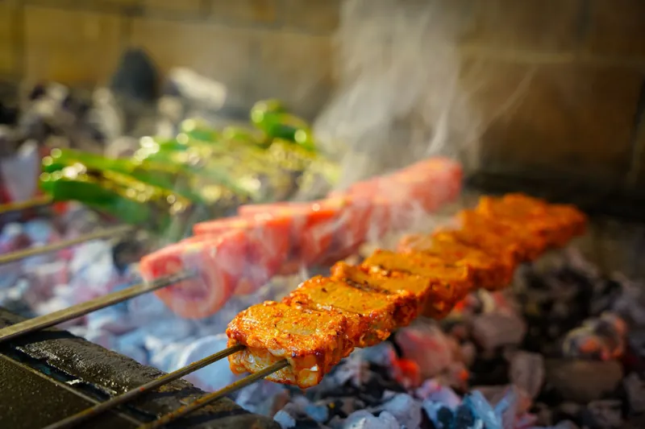
Kastoori boti — a regular's scorecard gives it 9/10.
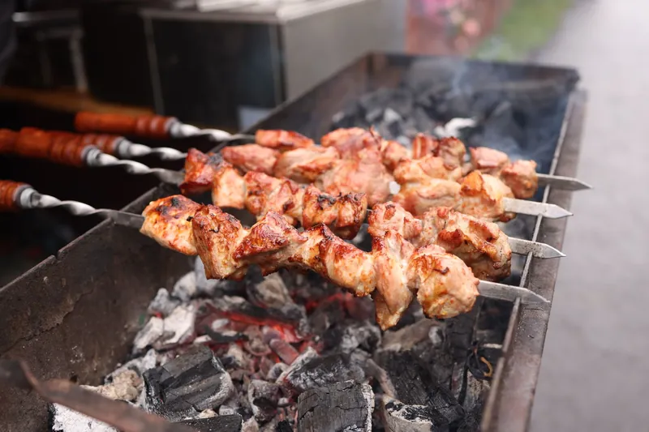
Beef bihari boti — the one reviewers recommend by name.
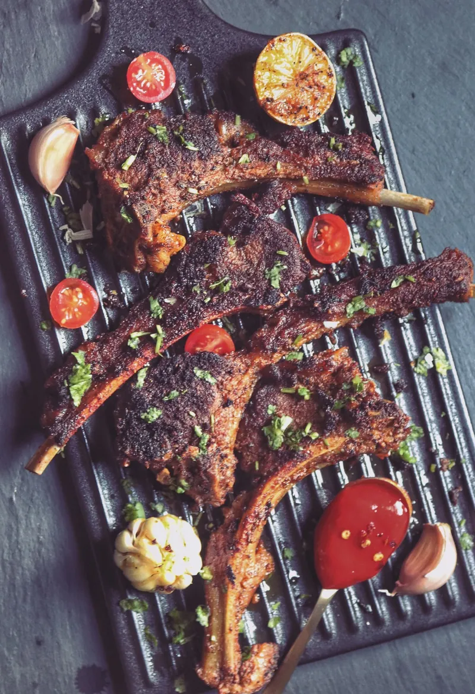
Mutton chops off the grill — “the place to have mutton karahi and mutton chops.”
The BBQ platter — a spread of the grill in one order — is the first-timer's pick, say reviewers.
04 Live fire
Nothing here is cooked ahead. The karahi goes on the fire after you order — reviewers say the chef makes it live in front of you — and the skewers go over coals while you watch. That is the whole point of Frontier.
Karahi by the half or full kilo, skewers by the plate.
Cooking starts only after your order is in.
Reviewers report a 30–40 minute wait — the price of cooking to order.
Straight off the coals to the table, with fresh naan from the tandoor.
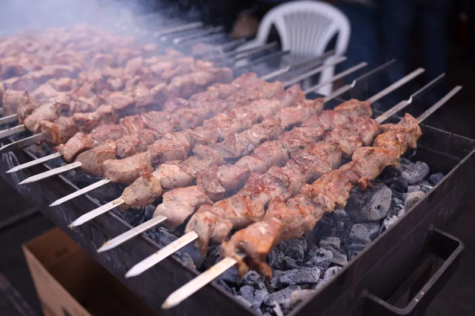
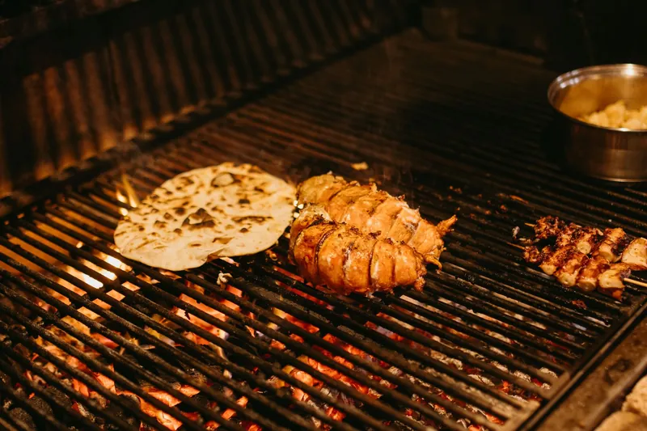
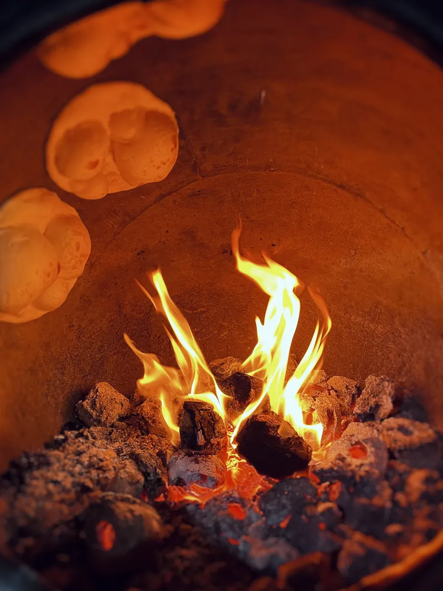
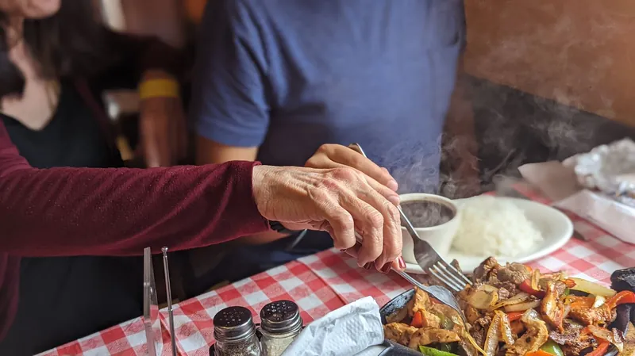
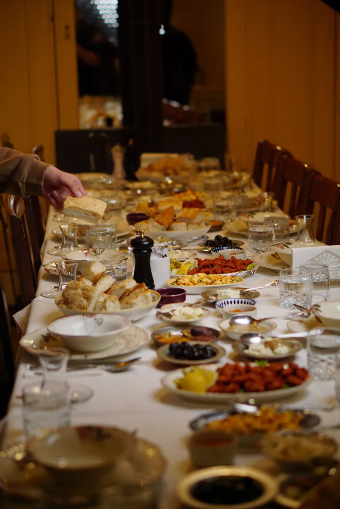
“Best mutton karahi. Cannot have enough. Very quick service & served sizzling hot. If you have not tried then you MUST.”
— Google review, via WorldOrgs
05 Family hall
Frontier is a family table kind of place. Sit inside in the family hall — recently renovated, with new air conditioning — or outside at the tables on the service road, Boat Basin style, with the strip buzzing around you.
06 The story
What the reviews agree on: a family-run karahi kitchen, now in its second generation, that Karachi keeps coming back to. Regulars call Frontier one of the city's oldest karahi names — the pioneer of karahi in Karachi, in their words — and order the same way every time: mutton karahi, chops, and whatever is smoking on the grill.
Some reviewers mention a founding year of 1972. That date could not be verified from a reliable source, so this page does not state it as fact. What is verified is the reputation: 4.3 stars on Google from over 2,900 reviews, and a Boat Basin corner that fills up every evening.
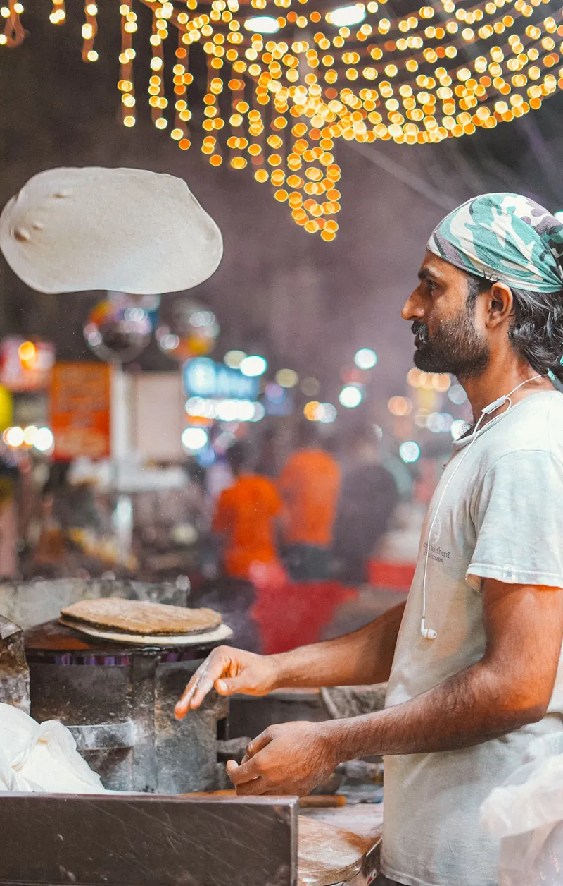
07 Why locals choose Frontier
Six things reviewers mention again and again — in their words, not ours.
Reviewers call Frontier the pioneer of karahi in Karachi — “one of the best karahi in Boat Basin.”
The karahi is made in front of you, only after you order. Allow 30–40 minutes.
Served sizzling in the karahi, by the half or full kilo — “quantity is good according to KG.”
Skewers and chops off live coals — tender, smoky, fresh.
Reviewers describe a family-run kitchen now in its second generation, with a kind owner.
Indoor hall plus outdoor tables on the service road. Come after 7 PM, when the strip wakes up.
“They are pioneer of Karahi in Karachi, BBQ is delicious as well. A family run 40 years business in to 2nd generation. I must say when ever I visit Pakistan (Karachi) Frontier is my choice 5/7 Days. Extremely good food quality and friendly environment.”
— Google review, via WorldOrgs
08 Gallery
Coals, karahi, tandoor and chops. Tap any photo to see it full size.
09 Visit & hours
| Monday – Sunday | 12:00 PM – 3:00 AM |
|---|
Reviewers say the grill really gets going after 7 PM. Call ahead on weekend nights — the hall fills up.
Call to confirm10 Good to know
Frontier is listed as open daily 12:00 PM–3:00 AM. Reviewers say it is really an evening restaurant — come after 7 PM, when the grill is at its busiest.
There is no online booking. Call 0300 9281235 ahead, especially on weekend nights, when reviewers say the hall fills up.
Yes — an indoor family hall, recently renovated with new air conditioning, plus outdoor tables on the service road.
The karahi is cooked only after you order, so reviewers report a 30–40 minute wait. It arrives sizzling, straight off the fire.
Mutton karahi, then the BBQ platter or mutton chops. Regulars also swear by the cheese makhni karahi and kastoori boti.
Reviewers mention takeaway alongside dine-in. Call the restaurant to confirm before you head over.
11 Hungry?
Mutton karahi, chops and skewers — cooked to order, every night till 3 AM.
+92 300 9281235Shop # SC-10, Sea Breeze Center, Block 5 Clifton, Boat Basin, Karachi